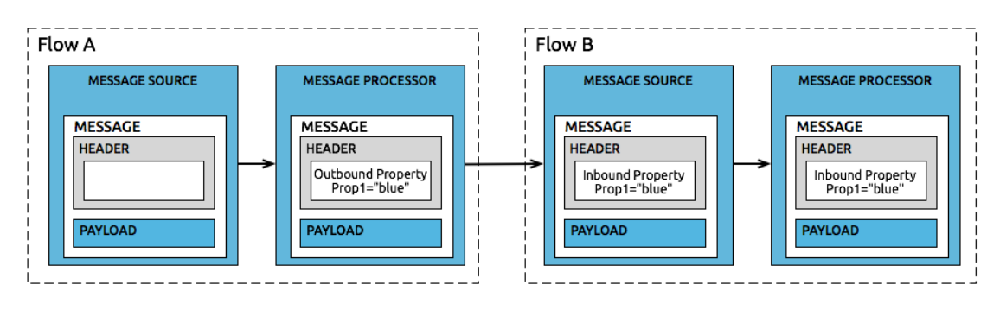

0.mule esb简要介绍
Mule ESB是一个轻量级的ESB，内核基于SEDA模型和Spring框架构建。基于Spring，意味有着非常灵活的扩展性。同时Mule ESB不仅仅是一个ESB，它也是流行的微服务体系中的一部分。mule的基本功能在于服务接入，消息转换，消息路由，消息过滤。
0.0Mule的社区版和企业版
其中社区版是免费使用的。而企业版则需要付费订阅使用，功能更强大。关于社区版和企业版的主要区别，可以参照下表。一般我们使用社区版即可满足我们的业务。
| 特性 | 社区版 | 企业版 |
|---|---|---|
| 开源的Mule ESB | √ | √ |
| 可视化开发工具Anypoint Studio | √ | √ |
| 图形化转换器 DataMapper/DataWeave | √ | |
| 高可用性(集群) | √ | |
| 缓存和事务支持 | √ | |
| 基于Web的管理控制台 | √ | |
| 批处理模块 | √ | |
| 社区版连接器 | √ | √ |
| 企业版连接器,包括Security等模块 | √ | |
| Hotfix&在线服务支持 | √ |
0.1mule esb安装和部署
mule esb主要用于旧系统的集成与改造，ETL数据转换，快速创建后端接口应用等场景。其可视化编排工具为基于eclipse改造的Anypoint Studio能够快速拖拽形成可执行部署的后端接口应用，或基于数据驱动的图节点处理引擎。
mule的Anypoint Studio以及runtime下载地址为:
mule runtime：https://docs.mulesoft.com/mule-runtime/3.9/downloading-and-starting-mule-esb
anypoint Studio:https://docs.mulesoft.com/studio/6/to-download-and-install-studio
0.1.1anypoint studio使用社区版runtime
安装社区版运行时，可以使用下列步骤。
- 点击Help/Install New Software…菜单
- 在Work with下拉框中选择Mule Runtimes for Anypoint Studio
- 输入http://studio.mulesoft.org/r6/studio-runtimes 选择Runtime 3.9.0 CE ,其中EE为企业版
0.1.2 导出工程部署到mule runtime运行
在工程的目录上右键选择export到处选择mule相关导出。导出一个app.zip安装包。
将导出的zip包放到解压好的mule runtime的app目录下面
在Mule Runtime的bin目录下执行
./mule或mule.bat启动命令
0.1.3 mule应用的xm描述介绍
Mule的应用程序就是由一个或者多个Mule Configuration File组成，每个Mule Configuration File里面可以放置一个或者多个Flow。每一个FLow又是由Connector和Processor等组成。而Flow是Mule的核心概念，下图展示了Flow的结构。
0.1.4 Mule ESB构造元素 - Flow
Mule ESB的应用程序通常是设计用来接收和处理消息。接收消息我们通常使用Connector Source来做，而处理消息通常使用一个或者多个Processor来做。Flow就是用来组织Connector和Processor的组。在一个Flow中，你可以将多个单独的Mule元素链接起来，用来实现接收，处理，过滤，路由消息等功能。
Flow实际就是上图的边框。实际还有Sub Flow的概念，主要用于Flow的公用，这些不展开讲述。
0.1.5 Mule ESB构造元素 - Connector
Mule的Connector是其非常优秀的功能，数百个开箱即用Connector可以帮助开发者连接不同的应用。从常见的HTTP，TCP，FTP，LDAP等协议，Hadoop大数据，到大型的商用系统SAP，Oracle，Salesforce，Mule都提供了相应的Connector。
Connector又分成Source Connector（又称为Inbound Connector）和Target Connector（又称为Outbound Connector）。
Source Connector用来接收消息，可以理解成监听器，而Target Connector是用来发送消息的组件。
0.1.6. Mule ESB构造元素 - Processor
Mule的Processor包含的内容更广泛，从Studio右侧的工具箱可以看到很多的控件元素，除去上文讲述的Connector，余下的基本都可以归纳到Processor。
Processor大概可以分成几类。
Transformers
可以称作转换器，用来转换消息的类型，结构和内容，比如将XML换成JSON。
Components
组件，可以使用Java或者脚本语言组件，比如JavaScript等。这些组件使用程序语言来描述商业逻辑。
Flow Control
控制消息的流向，比如消息的路由，消息的分割聚合等。
Scopes
通过Scope，我们可以改变内部Processor的行为特征。
Filters
过滤消息，我们可以定义规则过滤非法的消息。
1.Mule message结构
Flow的结构和构成元素，在Flow中流动的就是Mule Message。
Mule Message是一个数据结构，也有相对应的Java Class。它包括几部分Payload，Property，Attachment。如下图所示
Property
Mule Message的Property又分成Inbound Properties和Outbound Properties。这一点类似于HTTP协议的请求头和响应头。
Inbound properties 入站参数:
Outbound properties 出站参数:

Payload
Mule的Payload是一个对象，类型是不固定的。可能是Stream，也可能是Hashmap，也可能是XML字符串。这一点类似于HTTP协议的请求正文，或者说是请求体。
Attachment
Mule的Attachment就是消息的附件，这一点类似于HTTP协议中的multipartform-data请求。
如果你想看到整个MuleMessage的结构，使用Mule的Logger组件可以很方便的看到Message完整的组成。使用Logger打印出message，logger组件会重载message的toString方法，打印出Pretty格式的message。
1 | <?xml version="1.0" encoding="UTF-8"?> |
我们可以从下图的记录中找到和上图Message Structure相对应的节点。出于篇幅原因，做了简略处理。
1 | org.mule.DefaultMuleMessage |
1.1. Mule Message的Payload
Payload翻译成中文是负荷，负载的意思。它是Mule Message的主要部分，也是Mule处理的主要对象。我们后续说的数据转换就是对Payload的转换。注意Mule Message的Payload是有可能为空的，比如接收到一个Http Get请求，Http Get请求的请求体是空的，所以这个时候Mule Message的Payload是空的。
在Flow中，最常用的动作就是给payload赋值，给Payload赋值会使用set-payload组件。如果我们在Flow中想获取payload，可以使用MEL表达式。
下面的源代码表示payload的赋值和取值。
1 | <flow name="payloadFlow"> |
1.2. Mule Message的Property
Mule Message的Property是一个键值对，有name和对应的value。Mule Message有两种类型的Property，Inbound Properties和Outbound Properties。Inbound Properties或者Outbound Properties可以有多个Property，也就是多个键值对。
Inbound Properties是不可变的，是由Message Source产生的。就类似于Http的请求参数，是由用户的数据请求，经过Java的Servlet，或者Asp.Net等框架封装成Http Request对象。
Outbound Properties是可变的，我们在Mule的Flow中新增或者改变这些属性。注意，比如转换器，有些Mule Processor会自动增加有些属性。
在Mule中设定Property使用set-property组件，如果需要获取，同样使用MEL表达式。详细的MEL表达式，我们下篇会展开讲解。
1 | <flow name="propertyFlow"> |
1.3. Mule Message的Attachment
Attachment，正如字面上意思，可以理解成消息的附件。想象一封邮件，有邮件发送人等头信息，也有邮件正文，同样还有邮件附件。和Property一样，Attachment也有两种类型，Inbound Attachment和Outbound Attachment。我们通常将一些大的对象作为附件传输。
使用set-attachment设置附件，这里将payload作为pdf文档附件供消费者下载。
1 | <flow name="variableFlow"> |
1.4. Mule的Variable
Variable也就是变量，有几种类型的变量，或者说几种不同范围的变量，如下：Flow Variable，Session Variable，Record Variable。Flow Variable在一个Flow是有效的，Session Variable是可以跨Flow的，Record Variable则是处理数据列表时会用到。
这里不详细讲述。从使用上说，有些类似于Java里面的局部变量，Session变量，但不完全一致。后续实战文章会分析这一点。
在Mule里，使用set-variable和MEL表达式对变量做赋值和取值操作。
1 | <flow name="attachmentFlow"> |
1.5. 使用Java操作Mule Message
对程序员来说，千言万语不如代码，如何使用Java操作Mule Message呢？通过Java代码我们可以清楚的看到Mule Message的结构，成员变量和方法等。
1 | //mulemessage接口提供了很多方法，具體參考api |
2. MEL表达式
MEL是一种表达式，和脚本语言类似，但并不相同。表达式通常用于动态获取值或者设定值，或对数据进行简单的操作。表达式语言和脚本语言之间在功能上存在重叠，但如果您编写的内容非常复杂，需要的不仅仅是几行代码，或者您需要包含条件逻辑，那么脚本语言通常会更有用。如果简单的获取或设定值，调用方法或执行函数，则使用表达式则更方便。
2.1 MEL的使用场景
MEL表达式常用的使用场景大概可以分成三种。
获取值
1
#[payload]
- 表示获取message的负载
1
#[message.inboundProperties.'http.query.params'.customerNo]
- 表示获取查询参数customerNo
1
#[payload.callMethod(parameters)
- 表示调用payload对象的callMethod方法，并获取方法返回值
1
#[xpath('//root/element')]
- 表示使用xpath语法解析并获取相应节点内容。
条件比较，返回的结果就是布尔变量
#[payload.amount > 2000]1
#[message.inboundProperties.'http.method' == 'GET']
- 表示判断HTTP请求是不是GET方法
设定值，通常用于Message Enricher组件。
1
#[flowVars.dbResult]
- 这里表示相应的值设定到dbResult变量中。
2.2 MEL的示例
使用表达式提取值，根据消息的内容，属性决定执行流程。在下面的示例中，payload是一个Java对象，我们根据购买类型，将订单分发路由到不同的JMS消息队列中。
1
2
3
4
5
6
7
8<choice>
<when expression="#[payload.getOrderType() == 'book']">
<jms:outbound-endpoint queue="bookQueue" />
</when>
<when expression="#[payload.getOrderType() == 'music']">
<jms:outbound-endpoint queue="musicQueue" />
</when>
</choice>使用表达式提取值，并将值传递给Connector，如下示例就是使用MEL计算的值设定SMTP Connector的邮件标题，邮件接收人等。
1
<smtp:outbound-endpoint from="#[flowVars.mailFrom]" to="#[flowVars.mailTo]" subject="#[payload.mailSubject]" doc:name="SMTP"/>
如果payload是Java对象，可以调用payload方法，获取方法的返回值。示例就说调用calAmount方法，并打印计算出来的金额。
1
<logger message="#[payload.calAmount()]" />
2.3 MEL的上下文对象(四大内置对象)
我们在上述的MEL表达式示例中可以看到MEL有多个部分组成，第一部分就是上下文对象。MEL常见的上下文对象如下:
| 内置对象 | 说明 |
|---|---|
| #[server] | 当前服务器，可以获取服务器的时间，JDK版本等，如#[server.dateTime]，#[server.javaVersion] |
| #[mule] | 当前Mule实例，可以获取Mule的版本，目录等。如#[mule.version] |
| #[app] | 当前Mule应用的实例，可以获取应用的名称等。如#[app.name] |
| #[message] | 这个是我们最经常使用的对象，就说Mule message。如#[message.payload]，#[message.inboundProperties.’http.query.params’.customerNo]等 |
server上下文对象的常用属性:
| Field | Field描述 |
|---|---|
| dateTime | 系统当前时间 |
| host | 主机名 |
| ip | 主机IP |
| osName | 操作系统名称 |
| userName | 当前用户 |
| userDir | 当前用户工作目录 |
mule上下文对象的常用属性:
| Field | Field描述 |
|---|---|
| home | Mule Runtime的安装目录 |
| version | Mule Runtime的版本 |
| nodeId | 集群下的本机ID |
| clusterId | 集群ID |
app上下文对象的常用属性:
| Field | Field描述 |
|---|---|
| name | Mule App应用名称 |
| workdir | Mule App工作目录 |
message上下文对象的常用属性:
| Field | Field描述 |
|---|---|
| id | message的唯一ID |
| rootId | message的根ID |
| payload | message的负载 |
| inboundProperties | message的inbound头信息 |
| inboundAttachments | message的inbound附件信息 |
| outboundProperties | message的outbound头信息 |
| outboundAttachments | message的outbound附件信息 |
2.4 MEL的Variable
不同于上點提到的上下文对象，MEL中还可以使用变量，使用变量并不要求在表达式中使用上下文对象。变量是顶层的标识符。MEL中常见的变量如下：
- flowVars - flowVars的有效范围是在一个Flow中，定义flowVars之后，后续的Message Processor都可以使用。
- sessionVars - 在跨Flow通信时，可以使用sessionVars来传递变量。需要注意的是，sessionVars并不总是有效的，其实取决于Inboud Endpoint的类型。后续再出专题介绍flowVars和sessionVars等之间的区别。
1 | #[flowVars.foo = sessionVars.bar] |
上述的表达式的意思是，将session变量赋值给flow变量。
| 变量类型 | 生命周期 | 调用方式 |
|---|---|---|
| flowVars | 同一个Flow | #[flowVars.定义变量] |
| sessionVars | 同一个程序下的所有Flow | #[sessionVars.定义变量] |
2.5 MEL访问属性
点语法。适用对象通常是Java Pojo。MEL中可以使用点语法来访问相关的对象属性，同样对象属性的属性也是可以用点号来访问的。
1
#[message.payload.item.name]
Null安全性访问。Java编程中经常遇到NullPointerException错误，也就是说对空对象进行访问操作会报错。而在MEL表达式，可以通过点语法.?来避免出错。如下示例，即使item为null，该表达式仍然不会报错，它会返回null值。
1
#[message.payload.?item.name]
属性名称的转义。如果属性名称有特殊字符，那么使用点语法会遇到问题，这个时候可以单引号进行转义。如下示例，http.query.params是一个整体。我们访问这个属性名，必须使用单引号进行转义。
1
#[message.inboundProperties.'http.query.params'.customerNo]
中括号语法。如果对象是数组，或者Map，那么可以使用中括号进行访问
1
#[payload[5]]
1
#[payload['userName']]
2.6 MEL操作符
常用的操作符如下，和普通的开发语言类似。还有更多的操作符可以查阅官方手册。
算术运算符 + - / * %
#[2 + 4]#['fu' + 'bar']比较运算符 == != > < >= <=
#['A' == 'A']#[7 > 5]逻辑运算符 && ||
#[(a == b) && (c != d)]三元操作符
#[lastname = (name == 'Smith') ? 'Smith' : 'Unknown']
3.mule的扩展
3.1 connector-devkit编写
devkit是方便用户编写自己的connect，当然也可以将编写的控件作为mule的process执行，官网文档为:https://docs.mulesoft.com/connector-devkit/3.9/ 编写connector-devkit首先要基础devkit的父级pom
1 | <parent> |
然后使用connector-devkit提供的配置注解进行业务的描述，mule的devkit插件会根据注解的描述生成anypoint的控件配置界面和运行时代码。
定义connect的注解
@Connector1
2
3
4
5
6
7
8
9
10
11
12
13
14
15
16
17
18
19
20
21
22
23
24
25
26
27
28
29
30
31
32//@Connector注解标记此类为控件,@OnException注解标记此控件process或source抛出异常处理的handler类
(name = "testName", friendlyName = "控件显示名称", minMuleVersion = "3.9.0")
(handler = ErrorHandler.class)
public class TestConnector {
//外部提供的静态配置，会生成配置弹出界面
private GlobalConfig config;
//节点开始会执行
public void init() {
}
//中间节点的处理器处理代码，可以有多个@Processor根据名称不同供界面选择
(name = "testProcessor", friendlyName = "process控件显示名称")
public Object processExc(String userName, final MuleEvent muleEvent) throws Exception {
System.out.println("-->我要开始抛出异常了");
if (true) {
throw new Exception("asdfasdf");
}
return muleEvent.getMessage().getPayload();
}
//首节点的处理器处理代码，可以有多个@Source根据名称不同供界面选择
(friendlyName = "process控件显示名称")
public void readFromTopic(String userName, String address, Integer age, final SourceCallback sourceCallback)throws Exception {
sourceCallback.process("数据传递!");
}
//节点停止会执行
public void destroy() {
}
}定义OnException的处理节点
1
2
3
4
5
6
7
8
9
10
public class ErrorHandler {
public void handle(Exception ex) throws Exception {
System.out.println("异常了-->" );
ex.printStackTrace();
}
}定义Config的静态配置类
1
2
3
4
5
6
7
8
9
10
11
12
13
14
15
16
17
18
19
20
21
22
23
24
25
26
27
28(friendlyName = "自定义控件全局变量")
public class GlobalConfig {
("变量名称一")
(tab = "标签一")
private String va1;
("变量名称二")
("枚举一")
(tab = "标签一tab", group = "标签一group", order = 1)
//枚举
private EnumTest protocol;
("变量名称三")
(tab = "标签一tab", group = "标签一group", order = 2)
private String va2;
("变量名称三")
(tab = "标签二tab", group = "标签二group", order = 3)
private String va3;
//getter setter
mvn进行install打包成eclipse的课安装UpdateSite.zip包
使用anypoint的help->install new software,重启后即可拖拽使用
根据上述三个的注解描述类生成相对应的处理控件
3.2 mule runtimeplugin编写
我们可以编写插件对mule的运行时做一些额外的业务处理，比如社区版的自定义集群，当应用部署或启动停止的一些业务监听等。
引用依赖,由于我们的插件依赖mule的runtime都有，所以此处为provided
1
2
3
4
5
6
7
8
9
10
11
12
13
14
15
16
17
18<dependency>
<groupId>org.mule</groupId>
<artifactId>mule-core</artifactId>
<version>3.9.0</version>
<scope>provided</scope>
</dependency>
<dependency>
<groupId>org.mule.modules</groupId>
<artifactId>mule-module-reboot</artifactId>
<version>3.9.0</version>
<scope>provided</scope>
</dependency>
<dependency>
<groupId>org.mule.modules</groupId>
<artifactId>mule-module-launcher</artifactId>
<version>3.9.0</version>
<scope>provided</scope>
</dependency>实现
MuleCoreExtension,DeploymentServiceAware,DeploymentListener接口做自己的业务定制化即可MuleCoreExtension全路径为org.mule.MuleCoreExtension其主要是提供了mule节点的Lifecycle接口，可以方便的在节点启动，停止，初始化，销毁等生命周期做业务处理。
还继承了NamedObject，可以提供复写当前运行时的全局名称
DeploymentServiceAware全路径为org.mule.module.launcher.DeploymentServiceAware其主要提供了setDeploymentService(DeploymentService var1)方法，方便将DeploymentService 注入到业务中使用，其中DeploymentService 是非常重要的获取或操作运行时内部的应用的入口。
DeploymentListener全路径为org.mule.module.launcher.DeploymentListener其提供了关于业务应用运行生命周期的事件回调，方便我们对部署的应用进行全生命周期管理。
将打包好的插件jar包放到muleRuntme的/lib/opt供mule启动运行加载
3.3 常用的修改
3.3.1 启用远程调试
修改运行时环境目录的conf/wrapper.conf文件将按如下打开注释，注意将
1 | # Debug remotely, the application will wait for the external debugger to connect. |
3.3.2 配置spring context
按如下图增加spring配置文件和配置属性文件。因为muleRuntime本身的实现就是基于spring容器实现的所以很方便与spring集成做自己的业务。
spring-context.xml
1 | <?xml version="1.0" encoding="UTF-8" standalone="no"?> |
application.properties
1 | #数据库配置 |
mybatis-config.xml
1 | <?xml version="1.0" encoding="UTF-8" ?> |